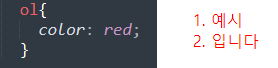

상속(Inheritance)이란 하위 요소가 상위 요소의 스타일 속성값을 물려받는 것
상위요소로 부터 상속이 이루어지는 속성이 있지만, 그렇지 않은 속성도 있다.
| 상속o | 상속x |
|---|---|
| color, font-family, font-size, font-weight, text-align, cursor 등등.. | background-color, background-image, background-repeat, border, display 등등... |
모든 css속성에 사용 가능한 키워드가 잇음.
때문에 이를 '전역 값'이라 표현 함.
| 키워드 | 의미 |
|---|---|
| inherit | 상위 요소로 부터 해당 속성의 값을 받아 사용. |
| initial | (브라우저에 지정되어 있는)해당 속성의 기본값을 요소에 적용 |
| unset |
상속 속성에 대해서는 inherit처럼,
상속되지 않은 속성에 대해서는 initial처럼 적용된다. |
이런식으로 border은 상속되지 않는 속성이지만 inherit로 인해 상위 요소로 부터
속성 값을 받아와서 p태그에 border박스가 생김
즉 inherit : 상속
initial 기본값
unset : 물려받을 수 있으면 물려받고, 그럴 수 없으면 기본값 사용하겠다는 의미